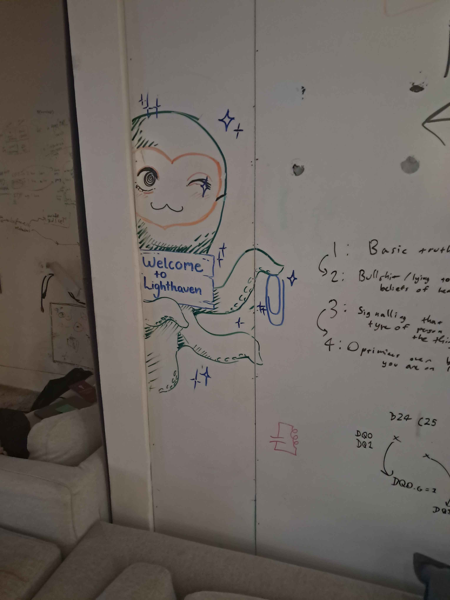
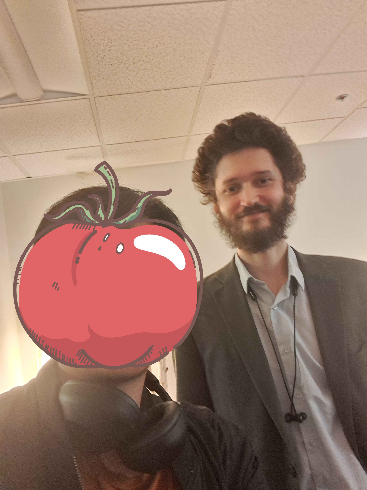

OASIS Blog
Note: This blog was written with the help of GPT-5.
OASIS is a 3-day workshop in Berkeley, hosted by Kairos, that brings together university AI safety organizers to exchange ideas and strengthen their groups.
Day 0
Day 0 had quite a hectic start. First, I took a 2-hour plane from Madison to Dallas, waited for 3 hours — with another 30-minute delay — and flew to SFO. I opened my Uber app after landing and realized that the drive between SFO and Berkeley was another 40 minutes, which I could’ve easily avoided by flying to Oakland directly. I was in a rush when I finally got to the hotel since dinner was served at Constellation (Our main event area), another 10-minute drive from the hotel. While checking in, a charismatic person asked if I was also here for OASIS. After confirming that we were both here for the same event, we decided to share an Uber going to Constellation.
In the Uber, we got to introduce ourselves. Hillel is from Harvard Law School and one of the organizers for AISST, the AI Safety organization at Harvard. When I mentioned that I was at an insurance company working on red-teaming AI, he said that this is interesting, and we should collaborate to create a start-up. I was surprised by this interaction since we’ve only met for 5 minutes, but I guess this is the difference between technical nerds and policy influencers. We arrived at the building and went up to the sixth floor. The space had big glass panels overlooking Berkeley. Since everyone was already socializing, I grabbed food and joined a random table. This is the moment I realized this event is going to be eye-opening: People quickly introduced themselves to me, and they were all unimaginably CRACKED. They were from places like Harvard Law, MIT, Yale, MATS, and even Anthropic. I thought to myself, “People that I look up to are casually eating food beside me? Do I really deserve to be here? This is crazy!!!”. Different than what I expected, they were approachable and kind. We had casual conversations where I complained about the trip coming to Berkeley, and how it was the first time I had ever been here. Dinner was great, as it would be throughout the event thanks to the private chefs. There was also a snack and drink bar, where they restock every day. I loved it so much that I had at least 15 bottles of tea and 10 packs of trail mixes throughout the event.
After dinner, we played some games and socialized. I finally got to meet Ayush and Parv — organizers from Georgia Tech I had been interacting with on Discord for a while. We played Cooperative Poker, a game where we attempt to guess the order of poker hand strength everyone had, with only the knowledge of how big people thought their hands were relative to others. Out of three rounds, we managed to win 1, with the other rounds being one-offs. The game was exciting and fun, especially since we are a group of AI Safety people. We then played a game of guessing higher or lower, and watched Parv and Neav (One of the organizers of the event from Kairos) nerd out on facts about Napoleon for 20 minutes.
Day 1
We started off day 1 by taking photos for our badges. The picture was good even though it was taken on a phone. A nice part about OASIS is that 9 am to 11 am is breakfast and co-working time, so you have time to catch up with work and socialize with others.
At 11, we kicked off the workshop and started with speed friending —Talking to people you haven’t interacted with before for 5 minutes. I’m not the biggest fan of this event since rotations were too brief to have deep conversations, but I guess that’s the point.
Next up was an organizing advice panel featuring MIT, Harvard, GT, and us. A couple of takeaways: 1) Harvard’s intentional balance between policy and technical work is worth adapting. 2) Be honest to the faculty, but only as much as you need (For tricky questions like Are you EA? X-risk?). 3) Do the obvious things for socials, make it interesting for attendants!
Afterward, we went into 1:1 conversation, where we had 30 minutes for a deep conversation with a random attendee. I was first paired with Arjun, a rising sophomore from Oxford. I was surprised to hear that he had a research collaboration with Redwood on AI Control, and he was planning to drop out of Oxford to work on that. He first introduced me to AI Control, which I only knew the original 2023 paper from Redwood. We then touched on the purpose of AI Control — whether it’s trying to prevent single-point catastrophic failures or multiple cascading ones. I also asked him for advice on systematically building a world model and personal beliefs. His advice was to take a top-down approach: Think of plausible failure modes, repeatedly ask “why not this one?”, trace backwards to the immediate precursors, and grow a tree of beliefs; then choose to work at the highest-leverage nodes.
My second conversation was with Steven from Berkeley. We were really casual and talked about topics like “What’s it like studying at Berkeley”, “What is BAISI like”, “How did you get into AI Safety”. He was a nice person to talk with, and by the end I found myself even more motivated to pursue a PhD at Berkeley someday.
The day ended with Organization Talks, where we heard about how industry organizations operate and their takes on AI Safety. We first hear from Ryan Kidd, the director of the prestigious ML Alignment & Theory Scholars (MATS) program. He described how the MATS program works and why they don’t run more of them: the limiting factor isn’t mentors or students, but research managers. For student groups, his advice was to focus on attracting capable people to the field. Then Lauren from Constellation explained how the space is usually used, and mentioned that we could apply as visiting scholars and get paid to do independent work there.
Day 2
After breakfast, we had a career talk with Michael Aird from RAND. He suggested doing short, 10-hour research sprints on different topics to figure out where you can make the most impact and to get a sense of how experts view the field. He also gave us a career worksheet that I plan to work through after the workshop.
Next was the Group Memo Discussion. Steven Veld, a MATS scholar working on the AI Futures project, presented his world model. After that, our own Jeremy spoke about how our organization structures leadership and gets things done. The discussion was lively and helped us recognize some shortcomings in our current system. Then Parv argued that we should pursue security clearance so we don’t get shut out of discussions once AGI development becomes restricted to government channels. His point made sense, though I wasn’t sure I wanted to go into DoD work just for clearance when I felt other paths might have more impact given short timelines.
By lunchtime, Neav introduced Kairos. I was amazed to learn they only have 4 remote employees, yet they manage to organize amazing events like OASIS and Supervised Program for Alignment Research (SPAR). It really shows how much you can achieve with a small but committed team.
The structured group talks followed. I was pleasantly surprised that Rob Miles (A famous AI Safety YouTuber) was here; I even took a selfie with him! There was one phrase from him that stuck with me: “Think of a topic that you think other people are doing a horrible job at; That’s what you’re good at.” He explained that when you’re skilled at something, it often doesn’t feel extraordinary, but it becomes obvious when you see others struggle with it. He also stressed the importance of explaining ideas as simply as possible, since the right audience will find you naturally. Other talks included Nikola Jurkovic from METR on AGI timelines, and Ryan Greenblatt from Redwood debating on AI unions. My biggest takeaway was how strongly people emphasized the role of AI policy.
Later, we had our second round of 1:1 conversation. To start, I spoke to Sambhav from Cambridge, who had a clear career path in mind and recommended I apply to SPAR. He advised me not to overthink and to give myself space to figure things out. He also introduced me to AI policy work, which I realized I need to learn more about. My next conversation was with Kaushik from Boston University. He was thoughtful and easy to talk to. We shared our perspectives on AI safety and discussed how to sharpen reasoning the way many OASIS participants seemed to do. It was reassuring to hear that he was also still exploring his path, since it often felt like everyone else already had their lives mapped out.
Soon after, Harvard’s AISST group gave a talk talked about on running successful policy groups. It’s probably not easy for other groups to replicate their approach — they are Harvard, after all — but it was still inspiring to see what’s possible with the right team.
The last event of the day was lightning talks, which turned out to be one of my favorite parts of the workshop. The talks covered everything from “why you should get a therapist,” to personal growth, EA vs. utilitarianism, language learning, agency, and even a bizarre story about gold bricks buried under UK railroads. It was a refreshing change of pace from the heavy AI focus. We ended the night stretching together, with some people doing splits and even one-handed pushups. It was a memorable finish to the day.
Day 3
After breakfast, we practiced pitching our ideologies in preparation for club fairs. It felt awkward since this isn’t my strength, but people were supportive, and it went better than I expected.
The group memo discussions came next. Samuel from UF talked his productive methods, which I find impressive as he managed to interview an executive at OpenAI through his method! Vinaya from Berkeley also shared how BASIS, Berkeley’s AI Safety group, maintains a high retention rate of 97%. This was especially useful for us, since retention is one of our biggest challenges. Finally, Aditya from BASIS described their experience running an AI safety retreat, which was helpful since we may organize one in the future.
After lunch, we had a session on event planning and common pitfalls. The highlight was people roasting a fake plan made by the organizers — including the suggestion to bake brownies for a career fair. (Seriously?!)
For the structured group discussion that came after, we had Buck Shlegeris (CEO of Redwood), Thomas Larsen (Author of AI 2027), Richard Ngo (Previously at Open AI), McKenna Fitzgerald from ARI, and Sydney Von Arx from METR. All the talks were engaging, but McKenna’s talk was particularly memorable. She described her efforts to push back against the proposed 10-year moratorium on state AI regulations, which succeeded with a 99–1 Senate vote. She also discussed SB 1047, a California bill intended to reduce catastrophic risks from powerful AI models. Although the bill passed both chambers, it was vetoed by the governor — a major disappointment for the AI safety community. McKenna emphasized that policy work requires perseverance: setbacks are part of the process, and the key is to keep going rather than be discouraged by defeats. Hearing her perspective gave me a deeper appreciation for those working in policy.
By this point, I was felt overwhelmed. The event was incredible, but also socially demanding. Most of the day was filled with conversations, which can be draining for an introvert like me. The same had been true on the previous days as well. The constant socializing left me exhausted, and as a result, I feared that I wasn’t able to fully take advantage of the event compared to others. Helena, one of the organizers, noticed and took the time to have a warm, reassuring conversation with me. She not only eased my worries but also offered advice on approaching people and building confidence. Manas from Berkeley joined later, gave me more advice, and even provided feedback on a red-teaming hackathon I was planning. That exchange deepened my appreciation for both the event and the people in it.
In the final session of the event, we spoke with Holden Karnofsky, founder of Open Philanthropy. He explained the philosophies behind Effective Altruism and Open Philanthropy: while we may not be able to eliminate problems all at once—such as ending animal cruelty or halting risky AI development—we can still make meaningful progress by reducing harm, like supporting cage-free eggs or backing safer AI labs like Anthropic. I really appreciated this perspective, though it also made me reflect on why so many people don’t engage with these issues as much as they could.
Although the main event had ended, the day wasn’t over yet. After dinner, we had a mixer with Constellation researchers, Anthropic fellows, and MATS scholars. Helena challenged me to talk to five different people, which felt daunting at first, but I was able to pull it off by the end. Later, Steven from Berkeley, who also runs the campus bell tower, invited us to the top after hours. From there, we enjoyed a stunning midnight view of Berkeley and heard the 9 p.m. bell ringing right above our heads. It was a unique moment that felt like the perfect close to the workshop.
Day 4
We could stay an extra day for the final MATS presentations and a closing mixer at Light Haven. I didn’t make it to the poster session because I spent most of the day working on my SPAR application, but I did get to meet some friends from Taiwan who happened to be visiting Berkeley at the same time.
The closing party at Light Haven was a highlight of the trip. The space was beautiful, with campfires and grassy areas perfect for relaxing with friends. I had a long conversation with one of Neel Nanda’s mentees — Neel being the researcher who had inspired me the most. We debated the value of policy work versus theory, and he joked that his initial motivation for joining MATS was the stipend. But he also spoke very highly of Neel as a mentor, emphasizing how deeply he cares about his students. Hearing that made me hope I might someday talk with Neel myself, or even work alongside him.
The evening ended with the MATS lightning talks, which ranged from quirky projects like an ASCII art benchmark, to a playful song about MATS, to someone discussing that AGI would be genderfluid. The mix of humor and creativity made the session one of the most memorable of the entire event. By the end of the night, I felt a real sense of belonging — and left more determined than ever to be part of MATS and the AI safety community.
Afterthoughts
I’m grateful to Jeremy for giving me the chance to join OASIS. At first, I was planning to decline since my internship hadn’t ended yet, but I decided to take PTO and attend—and it turned out to be one of the best choices I’ve made. I enjoyed the event so much that by day three, I had already applied to the EA Global conference. The experience strengthened my commitment to pursuing a career in AI Safety and getting more involved in our own AI Safety organization. I learned a great deal and had the chance to meet many people I admire. Hopefully by the time I attend OASIS next time, I can be more confident in myself and be more involved with AI safety. I also wish that in the future, I will become a MATS Scholar and become the person I look up to now.
Pictures




